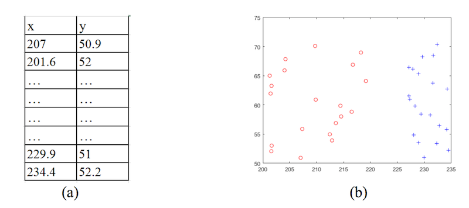
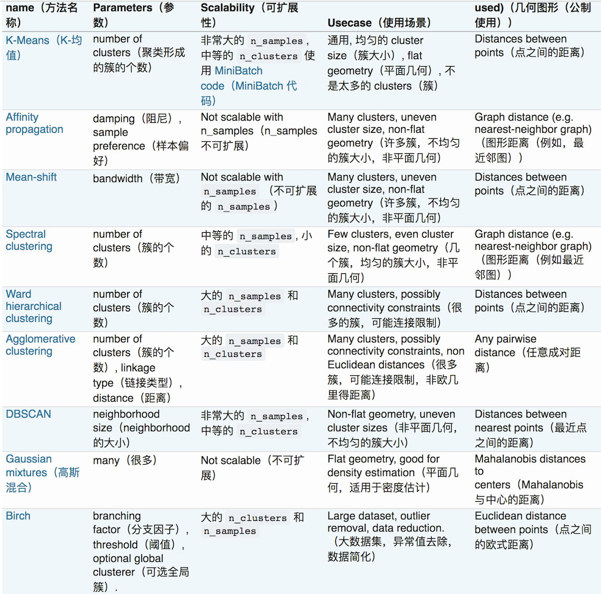

<!DOCTYPE HTML>
<html lang="zh-hans" >
    <head>
        <meta charset="UTF-8">
        <meta content="text/html; charset=utf-8" http-equiv="Content-Type">
        <title>9. 猜测这种划分最可能是什么聚类算法的结果 · 机器学习面试笔试题 - 极客圈</title>
        <meta http-equiv="X-UA-Compatible" content="IE=edge" />
        <meta name="description" content="">
        <meta name="generator" content="GitBook 3.2.3">
        
        
        
    
    <link rel="stylesheet" href="../gitbook/style.css">

    
            
                
                <link rel="stylesheet" href="../gitbook/gitbook-plugin-expandable-chapters/expandable-chapters.css">
                
            
                
                <link rel="stylesheet" href="../gitbook/gitbook-plugin-splitter/splitter.css">
                
            
                
                <link rel="stylesheet" href="../gitbook/gitbook-plugin-page-footer-ex/style/plugin.css">
                
            
                
                <link rel="stylesheet" href="../gitbook/gitbook-plugin-prism/prism.css">
                
            
                
                <link rel="stylesheet" href="../gitbook/gitbook-plugin-search/search.css">
                
            
                
                <link rel="stylesheet" href="../gitbook/gitbook-plugin-fontsettings/website.css">
                
            
        

    

    
        
    
        
    
        
    
        
    
        
    
        
    

        
    
    
    
    <meta name="HandheldFriendly" content="true"/>
    <meta name="viewport" content="width=device-width, initial-scale=1, user-scalable=no">
    <meta name="apple-mobile-web-app-capable" content="yes">
    <meta name="apple-mobile-web-app-status-bar-style" content="black">
    <link rel="apple-touch-icon-precomposed" sizes="152x152" href="../gitbook/images/apple-touch-icon-precomposed-152.png">
    <link rel="shortcut icon" href="../gitbook/images/favicon.ico" type="image/x-icon">

    
    <link rel="next" href="10.html" />
    
    
    <link rel="prev" href="8.html" />
    

    <style>
    @media only screen and (max-width: 640px) {
        .book-header .hidden-mobile {
            display: none;
        }
    }
    </style>
    <script>
        window["gitbook-plugin-github-buttons"] = {"buttons":[{"user":"geekcircle","repo":"machine-learning-interview-qa","type":"star","size":"large"}]};
    </script>

    </head>
    <body>
        
<div class="book">
    <div class="book-summary">
        
            
<div id="book-search-input" role="search">
    <input type="text" placeholder="输入并搜索" />
</div>

            
                <nav role="navigation">
                


<ul class="summary">
    
    
    
        
        <li>
            <a href="https://geektutu.com/series" target="_blank" class="custom-link">极客兔兔的博客</a>
        </li>
    
        
        <li>
            <a href="https://github.com/geekcircle/machine-learning-interview-qa" target="_blank" class="custom-link">machine-learning-interview-qa</a>
        </li>
    
    

    
    <li class="divider"></li>
    

    
        
        
    
        <li class="chapter " data-level="1.1" data-path="../">
            
                <a href="../">
            
                    
                    序言
            
                </a>
            

            
        </li>
    
        <li class="chapter " data-level="1.2" >
            
                <span>
            
                    
                    题目
            
                </span>
            

            
            <ul class="articles">
                
    
        <li class="chapter " data-level="1.2.1" data-path="1.html">
            
                <a href="1.html">
            
                    
                    1. 如何处理特征向量的缺失值
            
                </a>
            

            
        </li>
    
        <li class="chapter " data-level="1.2.2" data-path="2.html">
            
                <a href="2.html">
            
                    
                    2. 请简要说说一个完整机器学习项目的流程
            
                </a>
            

            
        </li>
    
        <li class="chapter " data-level="1.2.3" data-path="3.html">
            
                <a href="3.html">
            
                    
                    3. 某超市研究销售记录发现买啤酒的人很大概率也会买尿布，这属于数据挖掘的哪类问题
            
                </a>
            

            
        </li>
    
        <li class="chapter " data-level="1.2.4" data-path="4.html">
            
                <a href="4.html">
            
                    
                    4. 余弦相似与欧氏距离有什么区别和联系
            
                </a>
            

            
        </li>
    
        <li class="chapter " data-level="1.2.5" data-path="5.html">
            
                <a href="5.html">
            
                    
                    5. 下面哪个不属于数据的属性类型
            
                </a>
            

            
        </li>
    
        <li class="chapter " data-level="1.2.6" data-path="6.html">
            
                <a href="6.html">
            
                    
                    6. 监督学习和无监督学习
            
                </a>
            

            
        </li>
    
        <li class="chapter " data-level="1.2.7" data-path="7.html">
            
                <a href="7.html">
            
                    
                    7. 熵是为消除不确定性所需要获得的信息量，投掷均匀正六面体骰子的熵是
            
                </a>
            

            
        </li>
    
        <li class="chapter " data-level="1.2.8" data-path="8.html">
            
                <a href="8.html">
            
                    
                    8. 数据清洗与特征处理
            
                </a>
            

            
        </li>
    
        <li class="chapter active" data-level="1.2.9" data-path="9.html">
            
                <a href="9.html">
            
                    
                    9. 猜测这种划分最可能是什么聚类算法的结果
            
                </a>
            

            
        </li>
    
        <li class="chapter " data-level="1.2.10" data-path="10.html">
            
                <a href="10.html">
            
                    
                    10. 支持向量机(SVM)中的支持向量是什么意思
            
                </a>
            

            
        </li>
    
        <li class="chapter " data-level="1.2.11" data-path="11.html">
            
                <a href="11.html">
            
                    
                    11. 精确率（precision）和召回率（recall）
            
                </a>
            

            
        </li>
    
        <li class="chapter " data-level="1.2.12" data-path="12.html">
            
                <a href="12.html">
            
                    
                    12. 数据挖掘中如何判断关联规则有效性
            
                </a>
            

            
        </li>
    
        <li class="chapter " data-level="1.2.13" data-path="13.html">
            
                <a href="13.html">
            
                    
                    13. 朴素贝叶斯分类某个类别概率为0怎么办
            
                </a>
            

            
        </li>
    

            </ul>
            
        </li>
    

    

    <li class="divider"></li>

    <li>
        <a href="https://www.gitbook.com" target="blank" class="gitbook-link">
            本书使用 GitBook 发布
        </a>
    </li>
</ul>


                </nav>
            
        
    </div>

    <div class="book-body">
        
            <div class="body-inner">
                
                    

<div class="book-header" role="navigation">
    

    <!-- Title -->
    <h1>
        <i class="fa fa-circle-o-notch fa-spin"></i>
        <a href=".." >9. 猜测这种划分最可能是什么聚类算法的结果</a>
    </h1>
</div>


                    <div class="page-wrapper" tabindex="-1" role="main">
                        <div class="page-inner">
                            
<div id="book-search-results">
    <div class="search-noresults">
    
                                <section class="normal markdown-section">
                                
                                <h1 id="9-&#x731C;&#x6D4B;&#x8FD9;&#x79CD;&#x5212;&#x5206;&#x6700;&#x53EF;&#x80FD;&#x662F;&#x4EC0;&#x4E48;&#x805A;&#x7C7B;&#x7B97;&#x6CD5;&#x7684;&#x7ED3;&#x679C;">9. &#x731C;&#x6D4B;&#x8FD9;&#x79CD;&#x5212;&#x5206;&#x6700;&#x53EF;&#x80FD;&#x662F;&#x4EC0;&#x4E48;&#x805A;&#x7C7B;&#x7B97;&#x6CD5;&#x7684;&#x7ED3;&#x679C;</h1>
<p></p>
<h2 id="&#x4EE5;&#x4E0B;&#x662F;&#x5404;&#x4E2A;&#x7B97;&#x6CD5;&#x7684;&#x6BD4;&#x8F83;">&#x4EE5;&#x4E0B;&#x662F;&#x5404;&#x4E2A;&#x7B97;&#x6CD5;&#x7684;&#x6BD4;&#x8F83;</h2>
<p></p>
<h2 id="&#x5404;&#x4E2A;&#x805A;&#x7C7B;&#x7B97;&#x6CD5;&#x6BD4;&#x8F83;&#x7684;python&#x4EE3;&#x7801;">&#x5404;&#x4E2A;&#x805A;&#x7C7B;&#x7B97;&#x6CD5;&#x6BD4;&#x8F83;&#x7684;Python&#x4EE3;&#x7801;</h2>
<p><a href="https://github.com/geekcircle/machine-learning-interview-qa/tree/master/ipynb/sklearn-cluster-compare.ipynb" target="_blank">python&#x4EE3;&#x7801;&#x94FE;&#x63A5;</a></p>
<blockquote>
<p>&#x6700;&#x53EF;&#x80FD;&#x662F;KMean&#x7B97;&#x6CD5;</p>
</blockquote>
<footer class="page-footer-ex"> <span class="page-footer-ex-copyright"> <a href="https://github.com/geekcircle" target="_blank">geekcircle</a> </span> &#xA0;&#xA0;&#xA0;&#xA0;&#xA0;&#xA0;&#xA0;&#xA0;&#xA0;&#xA0; <span class="page-footer-ex-footer-update"> <strong>updated</strong> 2018-05-24 01:36:13 </span> </footer>
                                
                                </section>
                            
    </div>
    <div class="search-results">
        <div class="has-results">
            
            <h1 class="search-results-title"><span class='search-results-count'></span> results matching "<span class='search-query'></span>"</h1>
            <ul class="search-results-list"></ul>
            
        </div>
        <div class="no-results">
            
            <h1 class="search-results-title">No results matching "<span class='search-query'></span>"</h1>
            
        </div>
    </div>
</div>

                        </div>
                    </div>
                
            </div>

            
                
                <a href="8.html" class="navigation navigation-prev " aria-label="Previous page: 8. 数据清洗与特征处理">
                    <i class="fa fa-angle-left"></i>
                </a>
                
                
                <a href="10.html" class="navigation navigation-next " aria-label="Next page: 10. 支持向量机(SVM)中的支持向量是什么意思">
                    <i class="fa fa-angle-right"></i>
                </a>
                
            
        
    </div>

    <script>
        var gitbook = gitbook || [];
        gitbook.push(function() {
            gitbook.page.hasChanged({"page":{"title":"9. 猜测这种划分最可能是什么聚类算法的结果","level":"1.2.9","depth":2,"next":{"title":"10. 支持向量机(SVM)中的支持向量是什么意思","level":"1.2.10","depth":2,"path":"questions/10.md","ref":"questions/10.md","articles":[]},"previous":{"title":"8. 数据清洗与特征处理","level":"1.2.8","depth":2,"path":"questions/8.md","ref":"questions/8.md","articles":[]},"dir":"ltr"},"config":{"plugins":["-highlight","expandable-chapters","splitter","page-footer-ex","prism","github","github-buttons","sitemap-general"],"styles":{"website":"styles/website.css","pdf":"styles/pdf.css","epub":"styles/epub.css","mobi":"styles/mobi.css","ebook":"styles/ebook.css","print":"styles/print.css"},"pluginsConfig":{"prism":{},"github":{"url":"https://github.com/geekcircle/machine-learning-interview-qa"},"page-footer-ex":{"copyright":"[geekcircle](https://github.com/geekcircle)","markdown":true,"update_format":"YYYY-MM-DD HH:mm:ss","update_label":"<strong>updated</strong>"},"splitter":{},"search":{},"lunr":{"maxIndexSize":1000000,"ignoreSpecialCharacters":false},"sitemap-general":{"prefix":"https://geekcircle.github.io/machine-learning-interview-qa/"},"fontsettings":{"theme":"white","family":"sans","size":2},"github-buttons":{"buttons":[{"user":"geekcircle","repo":"machine-learning-interview-qa","type":"star","size":"large"}]},"sharing":{"facebook":true,"twitter":true,"google":false,"weibo":false,"instapaper":false,"vk":false,"all":["facebook","google","twitter","weibo","instapaper"]},"theme-default":{"styles":{"website":"styles/website.css","pdf":"styles/pdf.css","epub":"styles/epub.css","mobi":"styles/mobi.css","ebook":"styles/ebook.css","print":"styles/print.css"},"showLevel":false},"expandable-chapters":{}},"theme":"default","pdf":{"pageNumbers":true,"fontSize":12,"fontFamily":"Arial","paperSize":"a4","chapterMark":"pagebreak","pageBreaksBefore":"/","margin":{"right":62,"left":62,"top":56,"bottom":56}},"structure":{"langs":"LANGS.md","readme":"README.md","glossary":"GLOSSARY.md","summary":"SUMMARY.md"},"variables":{},"title":"机器学习面试笔试题 - 极客圈","language":"zh-hans","links":{"sidebar":{"极客兔兔的博客":"https://geektutu.com/series","machine-learning-interview-qa":"https://github.com/geekcircle/machine-learning-interview-qa"}},"gitbook":"*","description":"持续整理机器学习面试笔试题"},"file":{"path":"questions/9.md","mtime":"2018-05-23T17:36:13.000Z","type":"markdown"},"gitbook":{"version":"3.2.3","time":"2018-06-11T17:43:56.354Z"},"basePath":"..","book":{"language":""}});
        });
    </script>
</div>

        
    <script src="../gitbook/gitbook.js"></script>
    <script src="../gitbook/theme.js"></script>
    
        
        <script src="../gitbook/gitbook-plugin-expandable-chapters/expandable-chapters.js"></script>
        
    
        
        <script src="../gitbook/gitbook-plugin-splitter/splitter.js"></script>
        
    
        
        <script src="../gitbook/gitbook-plugin-github/plugin.js"></script>
        
    
        
        <script src="../gitbook/gitbook-plugin-github-buttons/plugin.js"></script>
        
    
        
        <script src="../gitbook/gitbook-plugin-search/search-engine.js"></script>
        
    
        
        <script src="../gitbook/gitbook-plugin-search/search.js"></script>
        
    
        
        <script src="../gitbook/gitbook-plugin-lunr/lunr.min.js"></script>
        
    
        
        <script src="../gitbook/gitbook-plugin-lunr/search-lunr.js"></script>
        
    
        
        <script src="../gitbook/gitbook-plugin-sharing/buttons.js"></script>
        
    
        
        <script src="../gitbook/gitbook-plugin-fontsettings/fontsettings.js"></script>
        
    

    </body>
</html>

